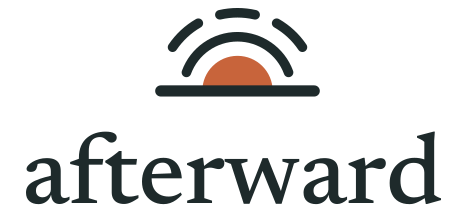

Design system · prototype revision for review
Afterward style guide
The identity, tokens and components the prototype uses. Every example on this page is the real CSS from assets/css/. Full notes are in DESIGN-GUIDE.md.
Brand concept: first light
The symbol is a low half-disc resting on a horizon line, with one whole arc and one arc in three parts above it.
- The horizon is the steady line Afterward keeps: the plan, the record, the ledger every reply is held against. It's also the text baseline in the lockup.
- The half-disc is the family's one voice note, said once, warm and low. It reads as first light rather than sunset: the time after.
- The arcs are that message carried outward. The outer arc breaks into three because it reaches many organisations, and each one is followed separately.
Calm, not cheerful. The dawn colour is used sparingly: the disc, focus rings and the current step. Everything else is ink on linen.
Logo usage
Hand-drawn SVG masters; the wordmark is Newsreader Medium converted to outlines, so masters don't depend on installed fonts. Use the colour version on linen or white, the dark version on ink, and mono versions on photos or single-colour print.

Compact mark and icons at real size
Do
- Keep clear space equal to the disc's height on every side.
- Use the full symbol at 32 px and above; the compact mark below that.
- Minimum lockup width: 96 px on screen.
- Align the symbol's horizon with the type baseline (built into the lockup).
Don't
- Recolour the disc red or green: it's not a status.
- Add a sun's rays, a halo, a heart or a dove.
- Animate the logo in the header. Motion belongs to the call room's agent state.
- Set the wordmark in another typeface or in capitals.
Voice
Warm, plain, brief
One idea per sentence. Use names: "Yusuf", "Amina". Never "the deceased" or "the user".
Say "I'm so sorry, Sara. I'll handle the emails so you don't have to explain this again."
Avoid "Your case has been successfully created! 🎉"
Honest about what's known
Separate said, promised and evidenced. Name what wasn't searched.
Say "Refund issued. Waiting for it to show on a statement."
Avoid "Refund complete." (when only promised)
Roles are stated
Afterward records what people say about themselves and never upgrades it.
Say "Handling the estate (as you've told me)"
Avoid "Executor: Sara Malik"
Simulation is always labelled
Anywhere data, sends, calls or timings are fake, the hatched label says so.
Simulated provider call Simulated timing, not a measurement
Colour
Linen paper, pine ink, one warm accent and five status hues. Status hues always come with an icon and a word. Swatches below read the live tokens, so switch the theme in the prototype bar to see dark values.
Contrast checks (computed live)
WCAG 2.2 relative luminance, from the current theme's tokens. Text needs 4.5:1 (AA); boundaries and large text need 3:1.
| Foreground | Background | Sample | Ratio | Use | Result |
|---|
Typography
Newsreader (serif) for headings and for anything quoted: voice notes and providers' words. Atkinson Hyperlegible Next for the interface, chosen for older readers like Amina and for projectors; its slashed zero keeps references unambiguous. Atkinson Hyperlegible Mono for references and hashes.
Space, grid and breakpoints
| Width | Behaviour |
|---|---|
| < 480 px | Phone: one column, 16 px gutter, stacked full-width buttons, 44–48 px targets. Ledger rows become cards. |
| 480–1023 px | One column with a wider measure. |
| 1024–1599 px | Desk: spine + main. Family: phone column + context. |
| ≥ 1600 px | Desk: spine, main and timeline as three columns. |
| Projector mode | Root 20 px, stronger ink and rules, secondary metadata hidden. |
Radius: 6 (chips, small buttons), 10 (buttons, inputs, banners), 16 (cards). Max content width 78rem; desk 112rem. Reading measure 38rem.
Controls
Buttons
Decision buttons: at most three, consequence in the description. The first option is never pre-selected.
Inputs
That passcode didn't work.
Segmented control
Navigation
Header with the lockup and surface links; the current page carries a dawn underline and aria-current="page". Under 768 px the links fold behind a Menu button. The hatched prototype bar exists only in the mock.
Status, evidence and simulation labels
Status chips (icon + word)
Evidence labels (F17)
Each label has its own border style (solid, double, dashed) so the distinction survives greyscale printing and colour-blindness.
Four-dimension account status
| Account | Service | Money | Documents | Next step | Conditions |
|---|---|---|---|---|---|
| Northline Mobile Mobile line ending 4417 NL-…4417 · forwarded email | ServiceReported transferred: not accepted | Money | DocumentsSent: death certificate (photo) | Next stepFamilyDecide: correction, call, or accept | ConditionsNot statedViolated |
Patterns
Evidence quote
Request complete. Line transferred to Mrs Malik on a new 24-month plan. Voicemail will be reset during migration.
Highlights carry an underline as well as a tint. Quotes are never truncated in their primary place.
Approval card (abridged)
Approval needed · one request
Transfer the 4417 line to Amina
- To
- bereavement@northline.example
- Request
- Transfer to Amina Malik
- Conditions
- Keep number · keep voicemail · no new contract
- Documents
- Death certificate (photo)
- Consequence
- Account holder changes; Yusuf's login may stop working
- If not met
- Hold and ask
Banners
Plan change
Verdicts
Not done
Agreed, not done
Resolved
Loading, empty, error, retry, blocked, stale
Loading
Skeleton with a status label, never a bare spinner.
Nothing here yet
Empty states say what will appear and when.
Error with retry
Blocked
Stale
Northline offers new terms
Success, only with evidence
Resolved
Provider confirmed in writingIcons
One original stroke set on a 20 px grid, 1.75 stroke, round caps to match the logo. Decorative icons are aria-hidden; meaning always comes from adjacent text.
Motion
Motion is slow, small and functional: 120 ms for hover, 220 ms for state changes, 420 ms for content settling into place (a 6 px rise and fade). Nothing bounces.
The only continuous motion is the call room's agent state: arcs pulse while the agent speaks and dash while it reviews. Loading skeletons shimmer gently.
Reduced motion: with prefers-reduced-motion: reduce, every duration drops to zero, the agent's arcs hold still and the state is carried by its text label. Preview runs in the proof panel complete faster.
Assets and licences
| Asset | Files | Source and licence |
|---|---|---|
| Logo masters | assets/brand/*.svg | Original, drawn for Afterward in this branch. SVG masters are editable vectors. |
| Logo exports | assets/brand/png/*.png, favicon.ico, favicon.svg | Rendered from the SVG masters with rsvg-convert. |
| Icons | assets/icons/sprite.svg | Original stroke set for Afterward. |
| Newsreader | assets/fonts/newsreader-*.woff2 | Production Type, SIL Open Font License 1.1 (OFL-Newsreader.txt). Latin subset via Fontsource 5.3.0. |
| Atkinson Hyperlegible Next / Mono | assets/fonts/atkinson-*.woff2 | The Atkinson Hyperlegible Next / Mono Project Authors (originally commissioned by Braille Institute), SIL OFL 1.1. Latin subset via Fontsource 5.3.0. |
| Wordmark outlines | inside the lockup SVGs | Newsreader Medium converted to paths; permitted by the OFL for logos. |
No remote fonts, scripts or images are loaded. No generated raster artwork is used.